Overview: five phases, one change at a time
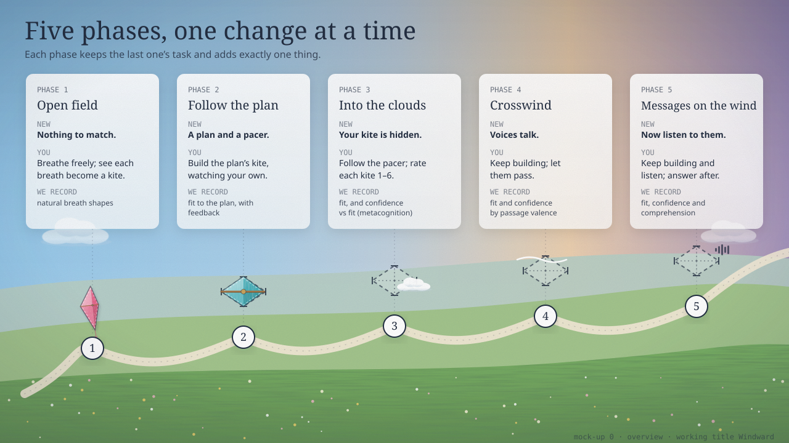
Phase 1 · Open field (free breathing)
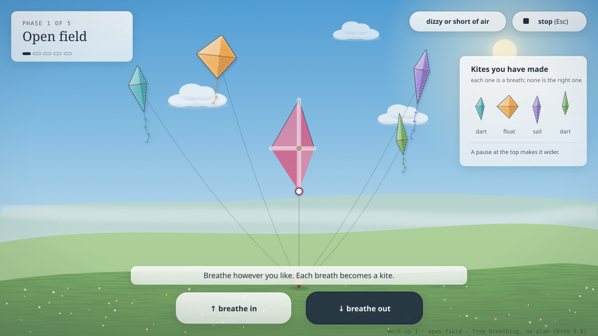
Phase 2 · Follow the plan (plan, pacer and your kite)
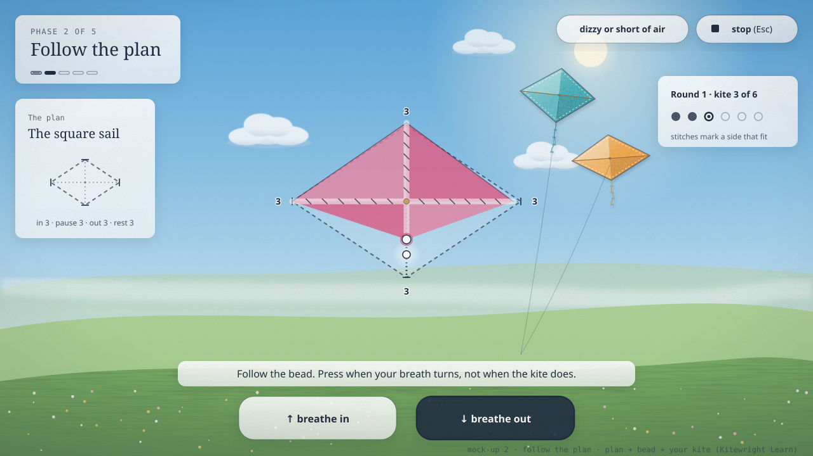
Phase 3 · Into the clouds (pacer, kite hidden)
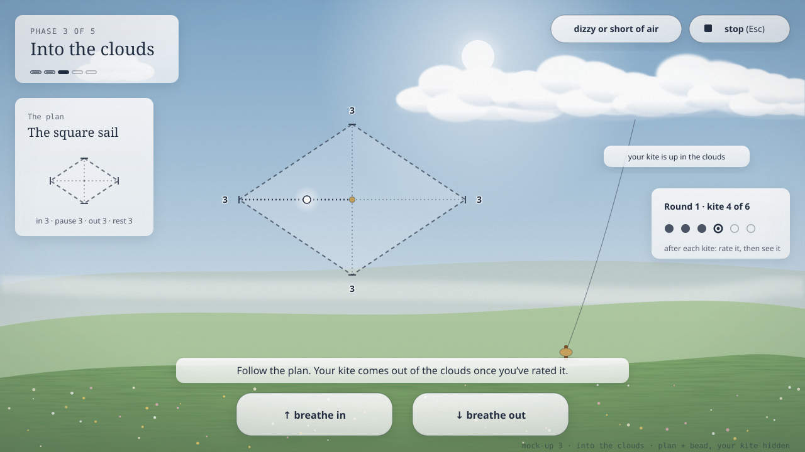
Phase 3 · Confidence rating after each kite
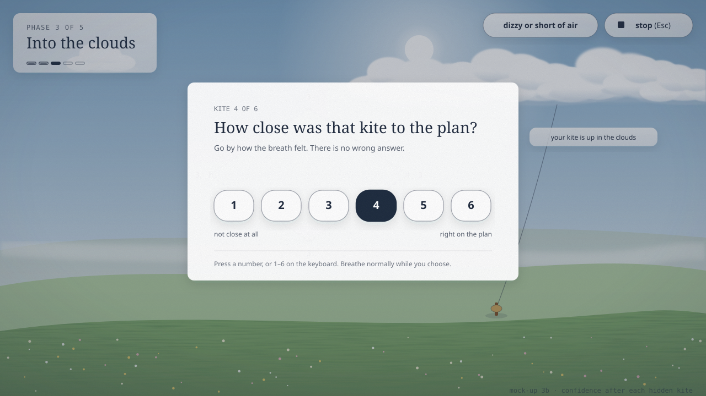
Phase 3 · The kite comes out of the clouds after the rating
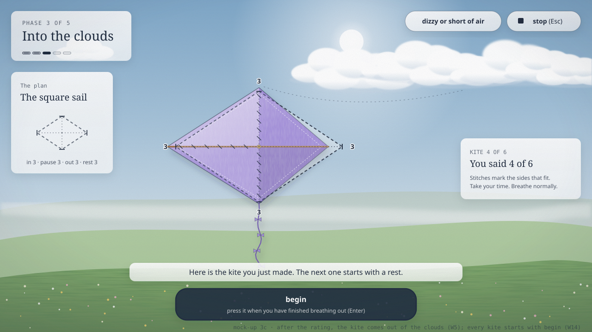
Phase 3 · End-of-round recap
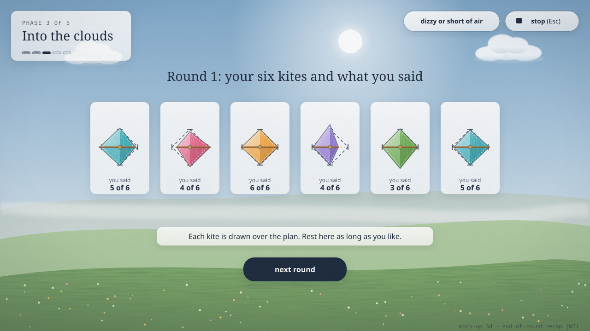
Phase 4 · Crosswind (background sounds)
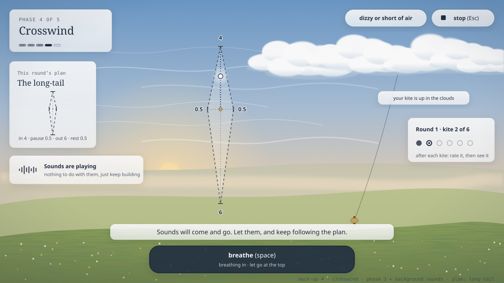
Phase 5 · Messages on the wind (listen while building)
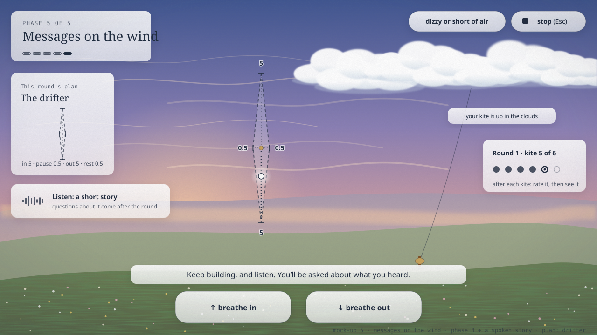
Phase 5 · Comprehension question
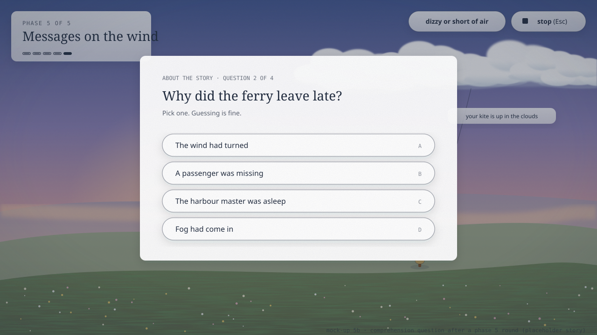
Design sheet · Narrow kites, four ways to draw them
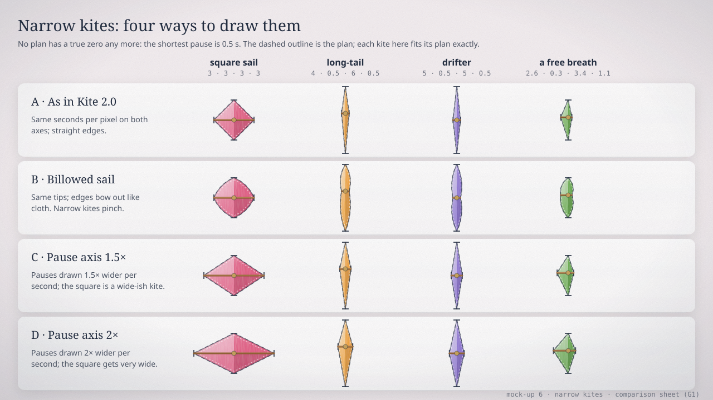